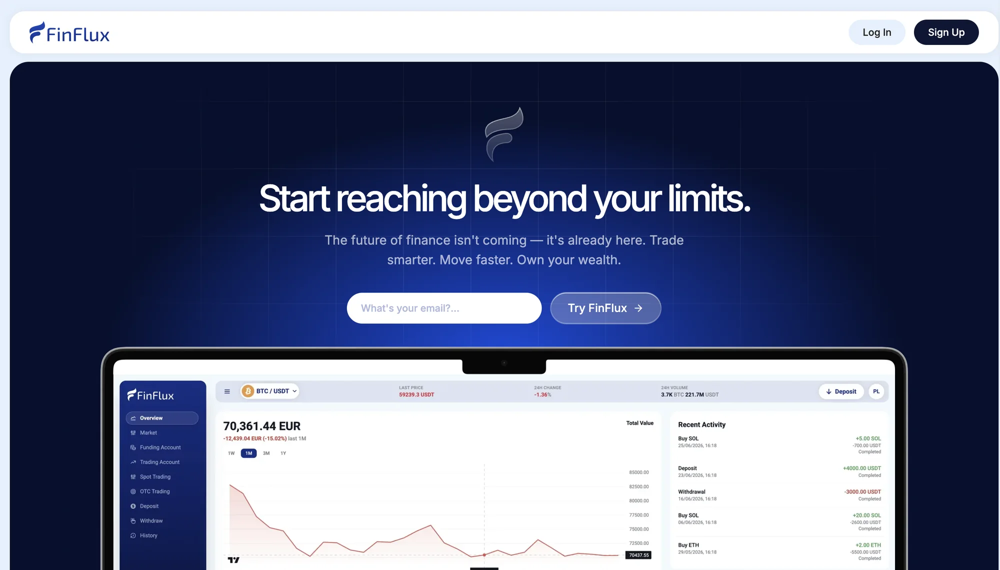
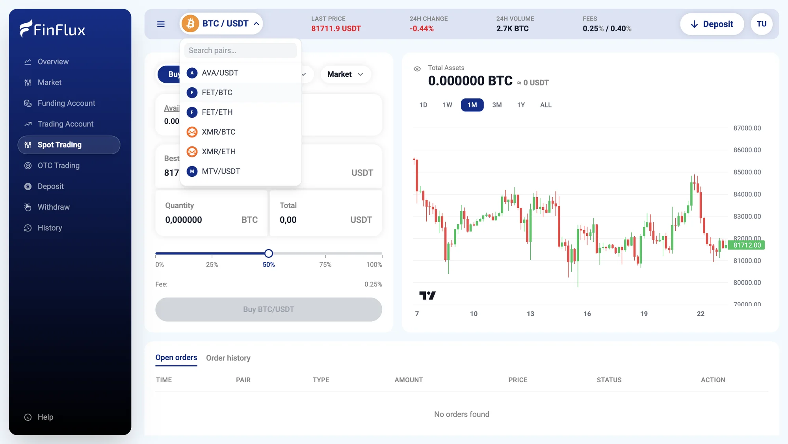

FinFlux: Designing a crypto trading website that feels calm, clear and trustworthy.
From the first visit on the landing page to the trading dashboard, for people new to crypto and for daily traders.
About FinFlux
FinFlux is a crypto trading platform where people buy, sell and follow all coins in one place.
The challenge
Crypto platforms often feel loud and risky: dense charts, jargon and bright warnings everywhere. New users don’t know where to start, and experienced traders lose time hunting for the numbers they check every day.
How might we make trading feel calm and clear, without hiding the detail traders rely on?
The research
I spoke one to one with 7+ people, from first-time buyers to daily traders, took apart how Coinbase, Binance and Kraken serve both, and read the studies that already exist.
of U.S. adults have little or no confidence that investing in, trading or using crypto is reliable and safe. Pew Research Center, 2024
is how easy 144 first-time users found it to learn Coinbase’s fees, the hardest task in the test. UserTesting benchmark
What people told me
“I have to ask real people to get reassurance if the site is legit.”
“Some platforms just expect you to know everything about crypto.”
“As soon as I take my eyes off a number, I have to spend minutes trying to find it again.”
Coinbase, Binance and Kraken all answer “beginner or trader?” by splitting the product in two, so people switch apps or modes to see more. FinFlux keeps one product and layers it instead: the numbers first, the detail one click away. Sources: Binance Lite vs Pro (Cryptohopper) · Kraken Pro launch (The Block)

The approach
- A calm, confident brand. A deep blue palette and the flowing F mark, so the product feels steady even when the market is unpredictable.
- One clear next step. The landing page leads with one message, “Start reaching beyond your limits”, and one action, motivating the user from the very first moment.
- Numbers first. The dashboard shows balance, price and change at a glance, with the detail one click away.
- Built as a system. Colours, type and components are defined once in Figma, so every new screen stays consistent.

The result
FinFlux now has one calm, consistent design from the first visit to the daily trade: a landing page with one clear next step, a trading dashboard that puts balance, price and change first, and a steady blue brand that holds it all together.
Colours, type and components live in one Figma system, so the developers at Nebula LTD could build every screen the same way. I tested the main flows along the way and refined them before handoff.